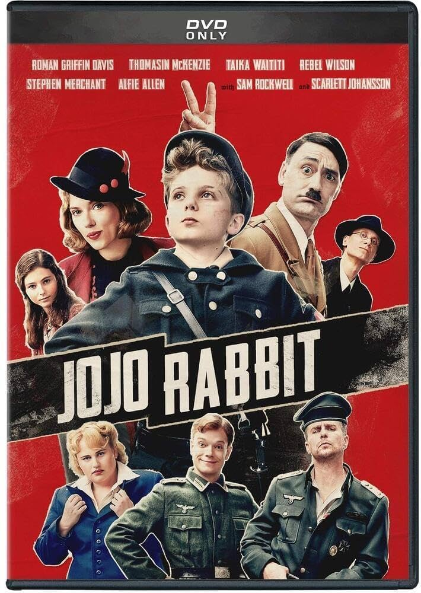
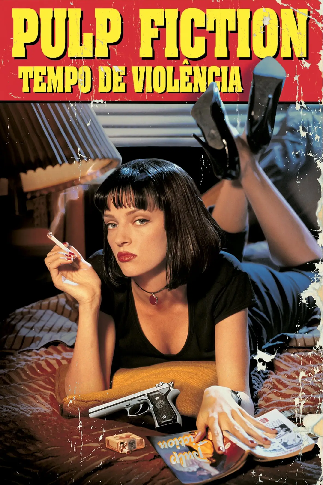
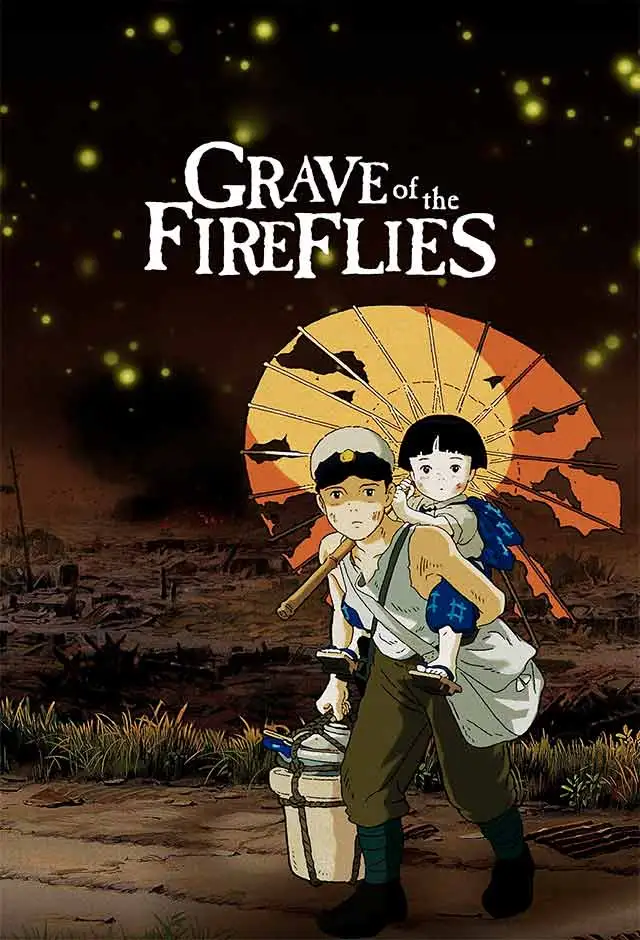
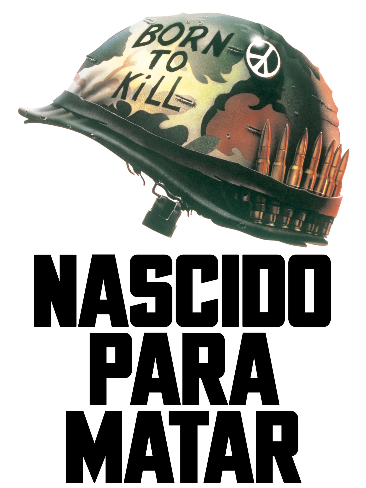
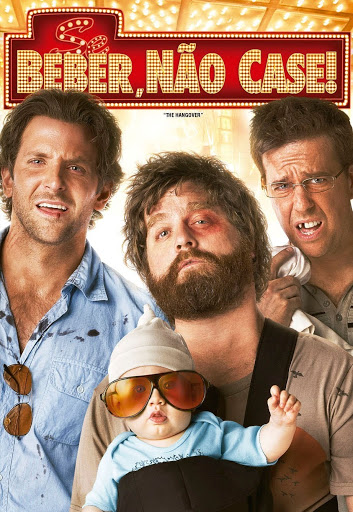
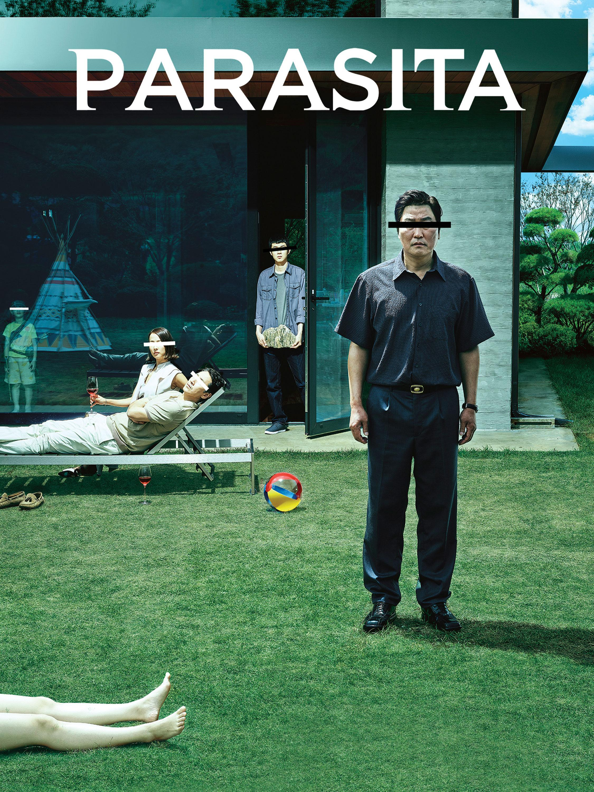
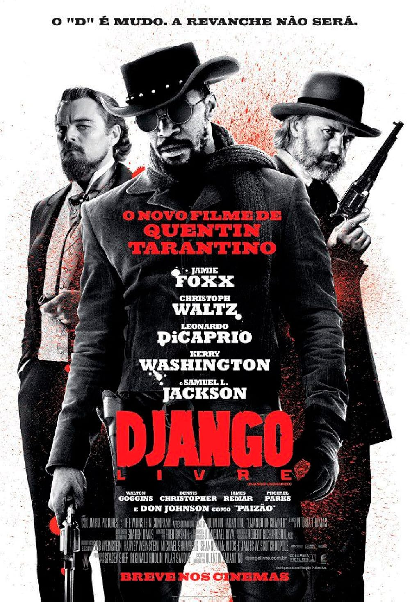
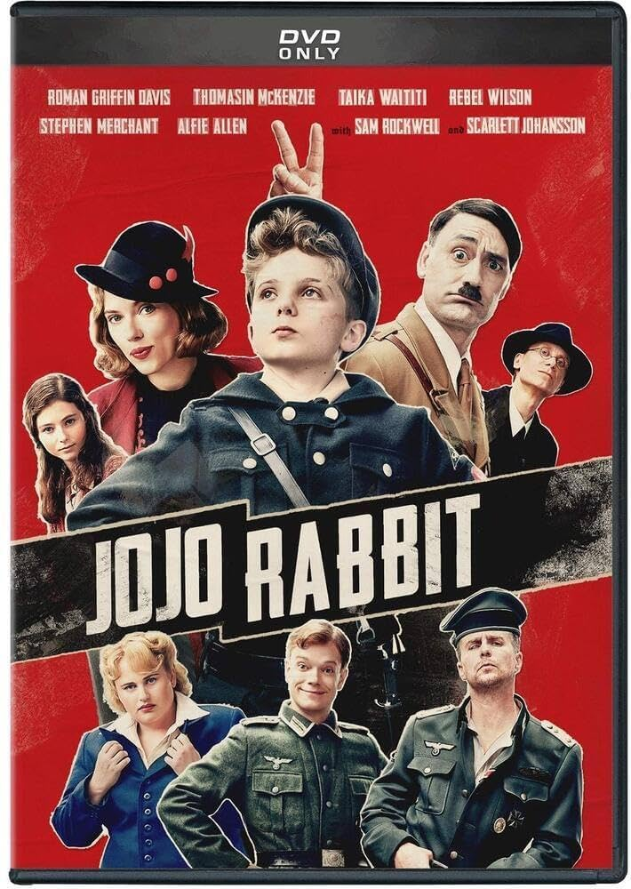

Lista com meu TOP 10 filmes
Filmes Internacionais e Nacionais
- Título: Jojo Rabbit, Diretor: Taika Waititi, Duração: 1h 48m, Ano: 2019, Classificação: 14 anos.
CURIOSIDADE: A frase mais marcante de "Jojo Rabbit" é, sem dúvida, a citação de Rainer Maria Rilke: "Deixe tudo acontecer com você: beleza e terror. Apenas siga em frente. Nenhum sentimento é definitivo.". Essa frase aparece na cena final do filme e resume a jornada de Jojo, mostrando a importância de aceitar as experiências da vida, tanto as boas quanto as ruins, e seguir em frente, aprendendo e evoluindo com elas.

- Título: Clube da luta, Diretor: David Fincher, Duração: 2h 19m, Classificação: 18 anos.
CURIOSIDADE: O filme é baseado em um livro homônimo, o escritor Chuck Palahniuk decidiu escrever após aparecer no escritório em que trabalhava com o olho roxo. A cena que Brad Pitt recebe um soco de surpresa de Edward Norton é real.

- Título: Pulp Fiction: Tempo de Violência, Diretor: Quentin Tarantino, Duração: 2h 29m, Classificação: 18 anos.
CURIOSIDADE:O diretor do filme já possuia o roteiro deste clássico mas para conseguir dinheiro lançou seu primeiro filme (Cães de aluguel) que acabou tornando-se um outro clássico cult.

- Título: Cidade de Deus, Diretor: Fernando Meirelles, Kátia Lund, Duração: 2h 10m, Classificação: 16 anos.
CURIOSIDADE:A maior parte do elenco principal e coadjuvante era composta por jovens não-atores, moradores de comunidades do Rio de Janeiro, incluindo a própria Cidade de Deus.

- Título: Midsommar - O Mal Não Espera a Noite, Diretor: Ari Aster, Duração: 2h 51m, Classificação: 18 anos.
CURIOSIDADE:O filme se passa principalmente durante o dia, apesar do elemento de terror, explora temas como luto, trauma, relações tóxicas e a busca por pertencimento, tudo isso em meio a rituais pagãos e tradições culturais únicas.

- Título: O Túmulo dos Vagalumes, Diretor: Isao Takahata, Duração: 1h 30m, Classificação: Livre.
CURIOSIDADE:O filme é baseado no conto semi-autobiográfico de Akiyuki Nosaka, que usou a obra para processar a culpa pela morte de sua irmã durante a guerra.

- Título: Nascido para Matar, Diretor: Stanley Kubrick, Duração: 1h 56m, Classificação: 16.
CURIOSIDADE:O filme é baseado no livro "Nato para Matar" (The Short-Timers), de Gustav Hasford, mas Kubrick fez alterações significativas, especialmente no tratamento da violência e do horror da guerra.

- Título: Se Beber, Não Case!, Diretor: Todd Phillips, Duração: 1h 40m, Classificação: 18.
CURIOSIDADE: Um dos destaques é a participação de Mike Tyson, que, apesar de icônica, o próprio ator admitiu não se lembrar de ter gravado, pois estava sob efeito de drogas e álcool na época.

- Título: Parasita, Diretor: Bong Joon-ho, Duração: 2h 12m, Classificação: 16.
CURIOSIDADE:Bong Joon-ho revelou que a história do filme foi inspirada em suas próprias experiências e observações da vida real.

- Título: Django Livre, Diretor: Quentin Tarantino, Duração: 2h 45m, Classificação: 16.
CURIOSIDADE: O ator do Django original faz uma cena no filme. A cena em que o ator Leonardo DiCaprio se machuca aconteceu de verdade.

CURIOSIDADE: A frase mais marcante de "Jojo Rabbit" é, sem dúvida, a citação de Rainer Maria Rilke: "Deixe tudo acontecer com você: beleza e terror. Apenas siga em frente. Nenhum sentimento é definitivo.". Essa frase aparece na cena final do filme e resume a jornada de Jojo, mostrando a importância de aceitar as experiências da vida, tanto as boas quanto as ruins, e seguir em frente, aprendendo e evoluindo com elas. 
CURIOSIDADE: O filme é baseado em um livro homônimo, o escritor Chuck Palahniuk decidiu escrever após aparecer no escritório em que trabalhava com o olho roxo. A cena que Brad Pitt recebe um soco de surpresa de Edward Norton é real.
CURIOSIDADE:O diretor do filme já possuia o roteiro deste clássico mas para conseguir dinheiro lançou seu primeiro filme (Cães de aluguel) que acabou tornando-se um outro clássico cult.
CURIOSIDADE:A maior parte do elenco principal e coadjuvante era composta por jovens não-atores, moradores de comunidades do Rio de Janeiro, incluindo a própria Cidade de Deus.
CURIOSIDADE:O filme se passa principalmente durante o dia, apesar do elemento de terror, explora temas como luto, trauma, relações tóxicas e a busca por pertencimento, tudo isso em meio a rituais pagãos e tradições culturais únicas.
CURIOSIDADE:O filme é baseado no conto semi-autobiográfico de Akiyuki Nosaka, que usou a obra para processar a culpa pela morte de sua irmã durante a guerra.
CURIOSIDADE:O filme é baseado no livro "Nato para Matar" (The Short-Timers), de Gustav Hasford, mas Kubrick fez alterações significativas, especialmente no tratamento da violência e do horror da guerra.
CURIOSIDADE: Um dos destaques é a participação de Mike Tyson, que, apesar de icônica, o próprio ator admitiu não se lembrar de ter gravado, pois estava sob efeito de drogas e álcool na época.
CURIOSIDADE:Bong Joon-ho revelou que a história do filme foi inspirada em suas próprias experiências e observações da vida real.
CURIOSIDADE: O ator do Django original faz uma cena no filme. A cena em que o ator Leonardo DiCaprio se machuca aconteceu de verdade.